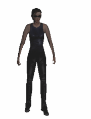
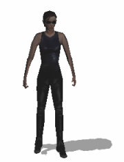
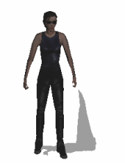

WME supports several types of shadows for 3D characters. The shadow types differ in their visual fidelity and hardware requirements.
This is, of course, the simplest case, shadows are completely disabled. You may need to disable shadows under certain circumstances, for example when your character is lying on the bed you probably won't need to display shadows.

This is sort of a "last resort" type of shadow. It's always available and doesn't impose any hardware or performance requirements. You can change the shadow image using the SetShadowImage() method.
Flat shadows are projected onto a fictional flat plane at the character's feet. You can specify the shape and direction of the shadow by specifying a position of a fictional light casting it. This can be done using the SetLightPosition() method. You can also change the color of the shadow using the ShadowColor property.
Flat shadows are not available on some older video cards. If the engine detects flat shadows are unavailable, it falls back to simple shadows.
Flat shadows impose a small performance loss, because the character model needs to be rendered twice; once for the shadow silhouette and once for the scene display itself.

Stencil shadows are the most advanced type of shadows. Similarly to flat shadows they're cast by a fictional light source, but unlike the flat shadow they are projected onto the hidden scene geometry. That means the shadows are realistically bending on the walls, furniture etc.
Similarly to flat shadows you can affect the shadow shape and direction by changing the light source position using the SetLightPosition() method and you can change its color by setting the ShadowColor property.
To use stencil shadows, the scene must be designed to support them. Your hidden scene geometry must include relatively detailed model of the scene objects receiving shadows, which is not required for the other shadow types. See this chapter for more information about hidden scene geometry.
Stencil shadows are the most hardware demanding type of shadows. They use both CPU and rendering power of the computer, especially for very detailed character models. For this reason WME allows you to specify a special low-polygon model of the character for stencil shadow processing purposes. This simplified character model is specified in 3D actor definition file. It must use exactly the same bone structure as your main character model, because they share the same animations.

It is sometimes desirable to limit shadow type support to certain detail level. For example, you can let the user choose detail level depending on their computer configuration, or you may need to only allow certain shadow type in certain scenes (for example, scenes which don't have detailed hidden geometry will be limited to flat shadows, some scenes don't need shadows at all, etc.).
To limit the maximum available shadow type for the entire game, use the Game.MaxShadowType attribute. This attribute can be assigned numbers 0 (no shadows), 1 (simple shadows), 2 (flat shadows) or 3 (stencil shadows). If you try to assign shadow type unsupported on current hardware, the engine will fall back to the next lower available shadow type. To check whether certain shadow type is supported or not, use the Game.IsShadowTypeSupported() method.
To limit the maximum available shadow type for a certain scene, use the Scene.MaxShadowType attribute. This value can be interactively assigned in SceneEdit when designing scene, using the Additional 3D options tab.
Additionally, you can specify shadow type individually for each 3D actor setting their ShadowType attribute.
Note: You cannot mix stencil shadows with other shadow types in a single scene. Once stencil shadows are enabled for a scene, all the actors must use them. If you attempt to use flat or simple shadows in scene with stencil shadow support enabled, you'll get graphical artifacts.